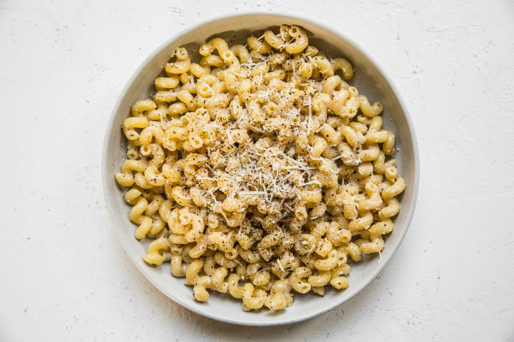

Creamy cavatappi
Time: 20mins Servings:4
Recipes

Our creamy cavatappi recipe gets its richness from authentic Italian cacio e pepe sauce, which has just four ingredients (two of which are cheese) making this speedy weeknight pasta an easy favorite.
Recipe Origin
- ¾ pound cavatappi pasta
- 2 tablespoons extra-virgin olive oil
- 2 teaspoons freshly cracked black pepper, plus more to taste
- 1¼ cups finely grated Pecorino Romano
-
Bring a large pot of salted water to a boil over high heat. Add the pasta and cook until al dente according to the package instructions.
Reserve 1 cup of pasta water and drain.
-
Meanwhile, heat the olive oil in a large skillet over medium heat. Once the oil is glistening,
add the pepper and cook, swirling the pan until fragrant, about 1 minute.
-
Add ½ cup of the reserved pasta water to the pan and bring to a simmer.
Remove the skillet from heat. Add the pasta, Parmigiano-Reggiano, and Pecorino Romano and toss until combined and the cheese has melted. If necessary, add more pasta water, 1 tablespoon at a time.
-
To serve, sprinkle with more pepper and Parmigiano-Reggiano, if desired.